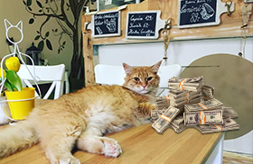

About
After this story the whole bus cried...
In a distant galaxy lived the cat-astronaut Felix from the planet Myaur. When the resources of his home planet began to dry up, Felix went to Earth to earn money.

I worked 8 days an hour...
He found work in a cafe, quickly won the sympathy of visitors and became a local celebrity. One day he met entrepreneur Anna, who invited him to become the mascot of her new project - the GalaxyCat token. Felix became a world-famous star and helped other cats make money.
If you refuse, I'll fucking blow up your Eart, or whatever it's called.
Now, after saving his home planet, Felix the cat began helping earthlings.